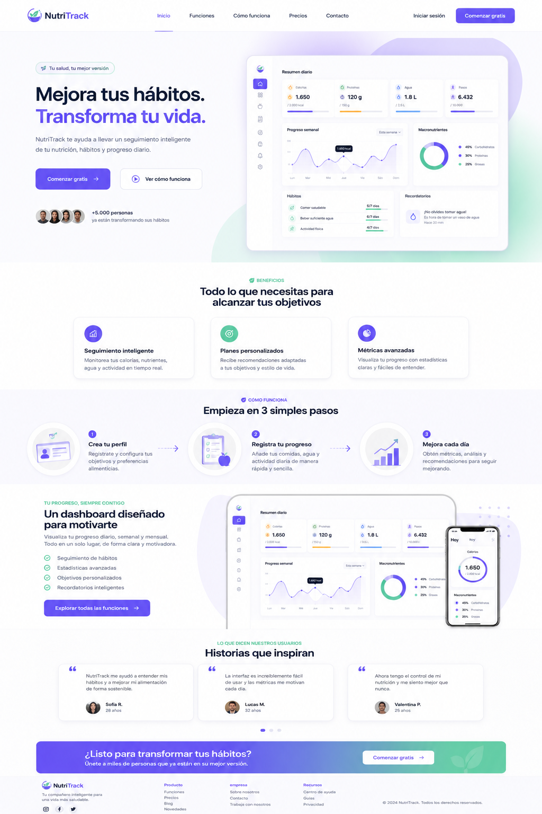

NutriTrack

Este proyecto se enfocó en el desarrollo de una plataforma orientada a la planificación de hábitos alimenticios saludables. La aplicación busca ayudar a los usuarios a organizar sus comidas, establecer objetivos nutricionales y acceder a recomendaciones personalizadas.